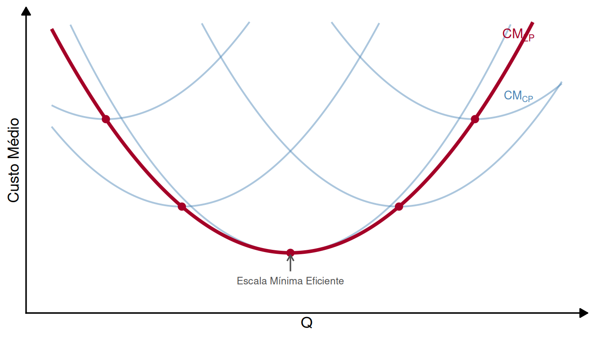
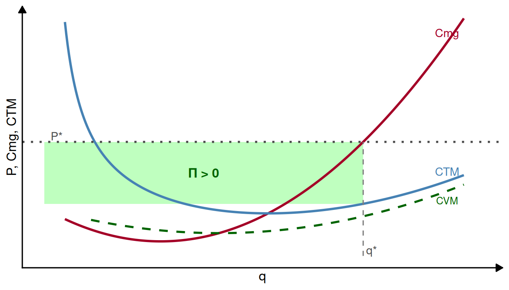
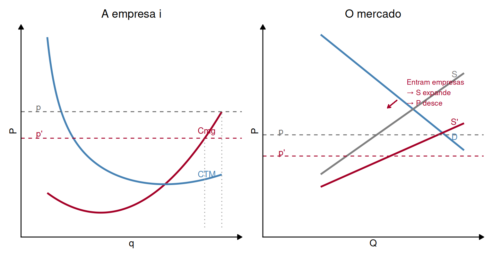
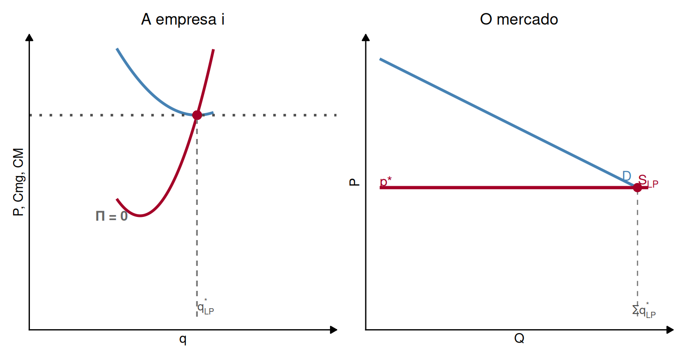
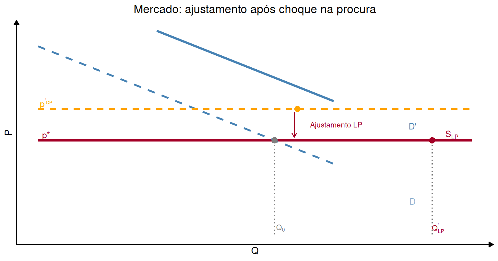

Microeconomia
Equilíbrio de Mercado e Oferta de Longo Prazo
1 Revisão: Curto Prazo vs. Longo Prazo
1.1 O que muda no longo prazo?
NoteLongo Prazo
No longo prazo, todos os fatores produtivos são variáveis — não existem custos fixos. A empresa tem acesso a todas as combinações de \(K\) e \(L\), e pode ajustar a sua escala de produção.
. . .
Consequência fundamental:
- Os custos médios de longo prazo são sempre menores ou iguais aos custos médios de curto prazo.
- A empresa escolhe a combinação \((K, L)\) que minimiza o custo para cada nível de produção.
1.2 Custos de Longo Prazo: Intuição Gráfica
- Cada curva azul: custo médio de curto prazo (capital fixado)
- Curva vermelha: envelope de longo prazo — o mínimo possível para cada \(Q\)
1.3 Economias e Deseconomias de Escala
NoteDefinições
- Economias de escala: \(CM_{LP}\) decrescente — escalar a produção reduz o custo médio.
- Deseconomias de escala: \(CM_{LP}\) crescente — crescer aumenta o custo médio.
- Escala Mínima Eficiente (EME): o nível de \(Q\) que minimiza \(CM_{LP}\).
. . .
A EME influencia a estrutura do mercado:
- EME pequena → mercado comporta muitas empresas pequenas (ex.: restaurantes, cabeleireiros)
- EME grande → mercado tende para poucas empresas grandes (ex.: automóvel, aviação)
2 Equilíbrio de Curto Prazo — Recapitulação
2.1 Equilíbrio de Mercado em CP
TipRecapitulação
No curto prazo, o número de empresas no mercado está fixo. O equilíbrio determina-se pela interação entre a procura do mercado e a oferta agregada das empresas existentes.
. . .
Condição de equilíbrio do mercado em CP:
\[Q_D(P^*) = Q_S(P^*)\]
. . .
Condição de otimização de cada empresa (tomadora de preço):
\[P^* = Cmg_{CP}(q^*)\]
. . .
Neste equilíbrio, o lucro individual pode ser positivo, nulo ou negativo.
2.2 O Lucro em CP como Sinal de Mercado

. . .
Se \(\Pi > 0\): o mercado é atrativo para novos produtores → entram empresas.
Se \(\Pi < 0\): algumas empresas saem (após cobrir custos fixos irrecuperáveis).
3 Dinâmica de Longo Prazo
3.1 Entrada de Empresas: Mecanismo
ImportantMecanismo de Ajustamento
O mercado em concorrência perfeita ajusta-se automaticamente através da entrada e saída de empresas:
- \(\Pi > 0\) → entrada de empresas → oferta expande → \(P\) desce → \(\Pi\) diminui
- \(\Pi < 0\) → saída de empresas → oferta contrai → \(P\) sobe → \(\Pi\) aumenta
. . .
Este processo continua até que nenhuma empresa tenha incentivo para entrar nem sair.
3.2 Entrada de Empresas: Efeito no Mercado

- Entram empresas → oferta expande (\(S \to S'\)) → \(p\) desce → \(q_i\) de cada empresa desce
- No total, há mais produto no mercado, mas o lucro individual diminui
3.3 Condição de Equilíbrio de Longo Prazo
A entrada/saída de empresas cessa quando \(\Pi = 0\).
. . .
Em concorrência perfeita, o equilíbrio de longo prazo verifica:
\[\boxed{P^* = Cmg_{LP} = CM_{LP}}\]
. . .
Interpretação:
- \(P^* = Cmg_{LP}\): a empresa está a maximizar o lucro (condição de otimização)
- \(P^* = CM_{LP}\): o lucro económico é nulo (condição de entrada/saída livre)
- Estas duas condições em simultâneo implicam que a empresa opera na Escala Mínima Eficiente
3.4 Equilíbrio de Longo Prazo: Gráfico

3.5 Oferta de Longo Prazo do Mercado
NoteCurva de Oferta de LP em Concorrência Perfeita
Com livre entrada e saída, a curva de oferta de longo prazo do mercado é horizontal ao nível de \(P^* = CM_{LP,\min}\).
. . .
Porquê horizontal?
- Sempre que \(P > P^*\): entram empresas → oferta aumenta → \(P\) desce até \(P^*\)
- Sempre que \(P < P^*\): saem empresas → oferta diminui → \(P\) sobe até \(P^*\)
- Portanto, no LP, o mercado só está em equilíbrio com \(P = P^*\)
. . .
A quantidade total de mercado é determinada exclusivamente pela procura — o número de empresas ajusta-se para satisfazê-la ao preço \(P^*\).
3.6 Excedente Total no Longo Prazo
TipExcedente no LP
No equilíbrio de longo prazo em concorrência perfeita:
- Excedente do produtor = 0 (lucro económico nulo)
- Todo o excedente económico do mercado é Excedente do Consumidor
. . .
Isto é uma propriedade notável da concorrência perfeita: no longo prazo, os consumidores capturam todo o ganho gerado pela atividade económica.
4 Ajustamento de Longo Prazo: Choque na Procura
4.1 Passo a Passo: Expansão da Procura
Suponha que o mercado está inicialmente em equilíbrio de LP. Ocorre um aumento permanente da procura.
. . .
Passo 1 — CP imediato:
A oferta está fixa (número de empresas fixo). O novo equilíbrio de CP tem \(P' > P^*\) e \(q_i' > q_i^*\). Surge \(\Pi > 0\).
. . .
Passo 2 — Ajustamento LP:
\(\Pi > 0\) atrai novas empresas. A oferta expande progressivamente. O preço desce.
. . .
Passo 3 — Novo equilíbrio LP:
O processo termina quando \(P = P^*\) novamente (se a tecnologia não se alterar e os preços dos fatores são constantes). A quantidade total no mercado é maior, mas cada empresa individual produz \(q_i^*\) (o mesmo de antes).
4.2 Ajustamento LP: Gráfico

- Após choque, CP: \(P\) sobe, \(\Pi > 0\) (ponto laranja)
- LP: entrada de empresas → \(P\) regressa a \(P^*\), mais empresas no mercado (ponto vermelho)
5 Exercícios
5.1 Exercício 1 — Escolha Múltipla
Uma empresa em mercado concorrencial tem função de custo total de LP: \[CT_{LP}(q) = q^3 - 6q^2 + 15q\]
Qual é o preço de equilíbrio de longo prazo neste mercado?
\(P^* = 3\)
\(P^* = 6\)
\(P^* = 9\)
\(P^* = 15\)
5.2 Exercício 1 — Solução
Resolução:
\[CM_{LP} = \frac{CT_{LP}}{q} = q^2 - 6q + 15\]
. . .
Mínimo de \(CM_{LP}\): \(\frac{d\,CM_{LP}}{dq} = 2q - 6 = 0 \Rightarrow q^* = 3\)
. . .
\[CM_{LP}(3) = 9 - 18 + 15 = \mathbf{6}\]
Confirmação: \(Cmg_{LP} = 3q^2 - 12q + 15 \Rightarrow Cmg_{LP}(3) = 27 - 36 + 15 = 6\) ✓
. . .
No LP, \(P^* = CM_{LP,\min} = Cmg_{LP}(q^*)\)
Resposta: B) \(P^* = 6\)
5.3 Exercício 2 — Escolha Múltipla
Continuando o exercício anterior (\(CT_{LP} = q^3 - 6q^2 + 15q\), \(P^* = 6\)). A procura de mercado é \(Q_D = 120 - 10P\). Quantas empresas existem no equilíbrio de LP?
10 empresas
15 empresas
20 empresas
60 empresas
5.4 Exercício 2 — Solução
Resolução:
Quantidade procurada ao preço de equilíbrio \(P^* = 6\): \[Q_D = 120 - 10 \times 6 = 60\]
. . .
Cada empresa produz \(q^* = 3\) no LP.
. . .
Número de empresas: \[n^* = \frac{Q_D}{q^*} = \frac{60}{3} = \mathbf{20 \text{ empresas}}\]
. . .
Resposta: C) 20 empresas
5.5 Exercício 3 — Desenvolvimento
Considere um mercado em concorrência perfeita com livre entrada e saída.
A procura de mercado é \(Q_D = 60 - 5P\).
Cada empresa tem função de custo total de LP: \[CT_{LP}(q) = q^3 - 6q^2 + 12q\]
(a) Determine o preço de equilíbrio de LP, \(P^*\), a quantidade produzida por cada empresa, \(q^*\), e o número de empresas no mercado, \(n^*\).
(b) Suponha que a procura aumenta para \(Q_D' = 75 - 5P\). Descreva o processo de ajustamento e determine o novo equilíbrio de LP.
(c) Calcule o Excedente do Consumidor nos dois equilíbrios e comente o resultado.
5.6 Exercício 3 — Resolução (a)
Alínea (a): Equilíbrio LP inicial
\[CM_{LP} = \frac{CT_{LP}}{q} = q^2 - 6q + 12\]
. . .
Mínimo de \(CM_{LP}\): \(\displaystyle\frac{d\,CM_{LP}}{dq} = 2q - 6 = 0 \Rightarrow q^* = 3\)
. . .
\[P^* = CM_{LP}(3) = 9 - 18 + 12 = 3\]
Confirmação: \(Cmg_{LP}(q) = 3q^2 - 12q + 12 \Rightarrow Cmg_{LP}(3) = 27 - 36 + 12 = 3\) ✓
. . .
Quantidade de mercado: \(Q^* = Q_D(P^*) = 60 - 5 \times 3 = 45\)
. . .
Número de empresas: \(\displaystyle n^* = \frac{Q^*}{q^*} = \frac{45}{3} = \mathbf{15 \text{ empresas}}\)
5.7 Exercício 3 — Resolução (b)
Alínea (b): Choque na procura
A tecnologia não se altera → \(P^*\) mantém-se igual a 3 no novo equilíbrio LP.
. . .
Processo de ajustamento:
- No curto prazo (n = 15 fixo): o preço sobe acima de 3, surgem lucros positivos.
- Os lucros positivos atraem novas empresas ao mercado.
- A oferta expande, o preço desce progressivamente.
- O processo termina quando \(P\) regressa a \(P^* = 3\) e \(\Pi = 0\).
. . .
Novo equilíbrio LP:
\[Q'^* = Q_D'(P^*) = 75 - 5 \times 3 = 60\]
\[n'^* = \frac{60}{3} = \mathbf{20 \text{ empresas}}\]
Entraram 5 novas empresas; cada empresa continua a produzir \(q^* = 3\).
5.8 Exercício 3 — Resolução (c)
Alínea (c): Excedente do Consumidor
Da procura \(Q_D = 60 - 5P\): inversa \(P = 12 - \frac{Q}{5}\)
\(\Rightarrow\) preço máximo: \(P_{max} = 12\) (quando \(Q = 0\))
. . .
EC inicial (equilíbrio com \(P^* = 3\), \(Q^* = 45\)):
\[EC_0 = \frac{(12 - 3) \times 45}{2} = \frac{9 \times 45}{2} = \mathbf{202{,}5}\]
. . .
EC após choque (\(P^* = 3\) mantém-se, \(Q'^* = 60\)):
\[EC_1 = \frac{(12 - 3) \times 60}{2} = \frac{9 \times 60}{2} = \mathbf{270}\]
. . .
TipComentário
O preço não se altera no LP (oferta horizontal), pelo que todo o benefício do aumento da procura é capturado pelos consumidores — o EC aumenta de 202,5 para 270. O excedente do produtor permanece nulo.
6 Síntese
6.1 Resumo: Equilíbrio de LP em Concorrência Perfeita
| Curto Prazo | Longo Prazo | |
|---|---|---|
| Número de empresas | Fixo | Variável (entrada/saída livre) |
| Condição de otimização | \(P = Cmg_{CP}\) | \(P = Cmg_{LP}\) |
| Lucro económico | Pode ser \(\neq 0\) | \(\Pi = 0\) |
| Preço de equilíbrio | Pode variar | \(P^* = CM_{LP,\min}\) |
| Curva de oferta | Crescente | Horizontal |
| Excedente do produtor | Positivo | Zero |
. . .
ImportantMensagem-chave
A concorrência perfeita com livre entrada/saída é o único regime de mercado em que, a longo prazo, os consumidores capturam todo o excedente económico e os recursos são afetos à Escala Mínima Eficiente.